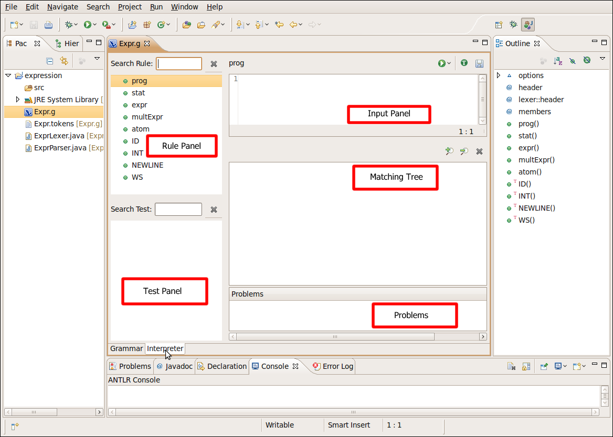
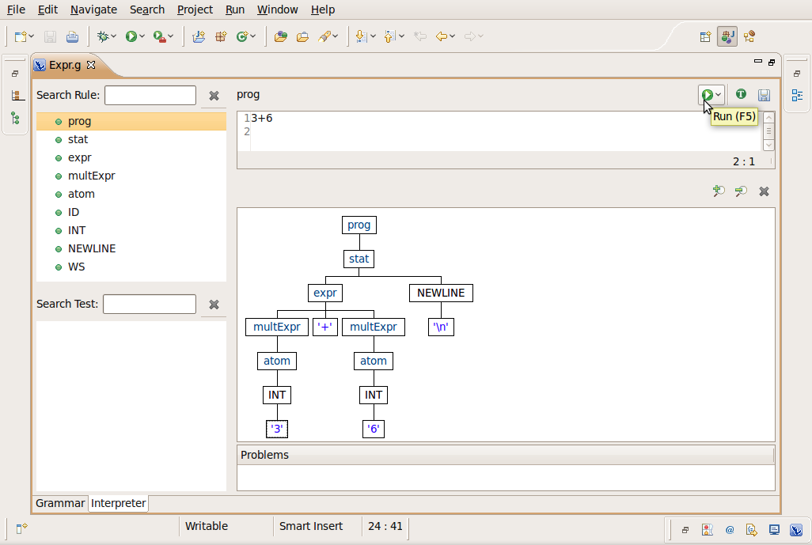
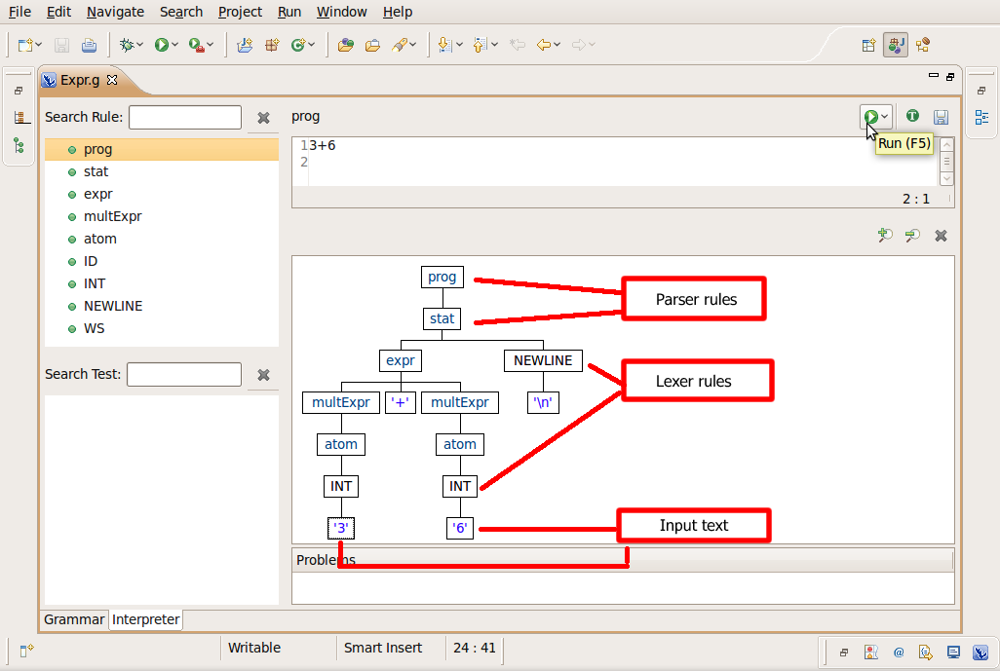

In this section, you will learn how to use the interpreter to test and evaluate rules.
Note: The use of the interpreter is for fast prototyping of ANTLR grammars. The ANTLR built-in interpreter can't deal with predicates, if your grammar contains predicates (or if you see FailPredicateException when you are evaluating rules) you need to launch the grammar in Run/Debug mode.

In the Rule Panel you'll see all the rule available for the current grammar
In the Test Panel you'll see all test defined for each rule available in the current grammar
In the Input Panel you'll see the input for the current test case

